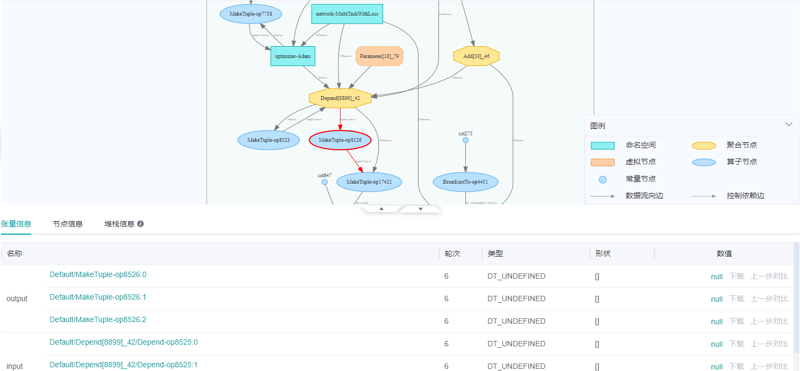
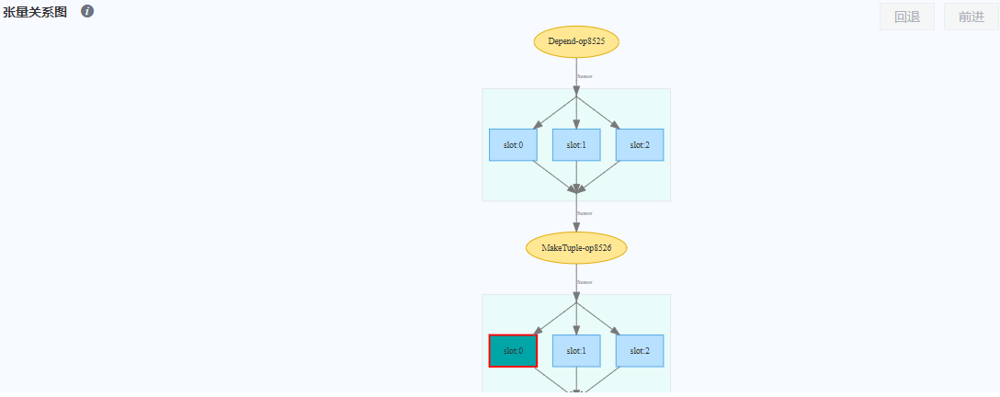
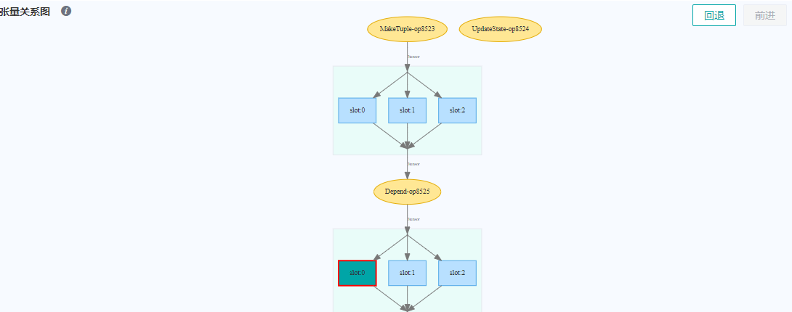

FAQ

Q: 请问在做神经网络中间特征可视化时，输入给模型一张图片，如何获取中间层的各个输出，并进行可视化？
A: 可以通过MindSpore提供的TensorSummary算子配合SummaryCollector完成感兴趣数据的收集，收集到的数据可以使用MindSpore Insight可视化查看。对于图像类数据，您还可以用ImageSummary进行收集。由于tensor数据较大，收集的时候请合理控制collect_tensor_freq参数的取值，否则会消耗大量磁盘空间并显著降低运行速度。
使用样例如下：
class Net(nn.Cell):
"""Net definition."""
def __init__(self):
super(Net, self).__init__()
...
# Init ImageSummary
self.image_summary = ops.ImageSummary()
# Init TensorSummary
self.tensor_summary = ops.TensorSummary()
def construct(self, data):
# Record image by Summary operator
self.image_summary("image", data)
# Record tensor by Summary operator
self.tensor_summary("tensor", data)
...
return out
详细教程请参考可视化调试调优。
Q: 请问在Ubuntu上安装了MindSpore Insight，运行时提示port 8080不可使用于MindSpore Insight，应该怎么解决？
A: 出现这个问题可能是因为8080端口已被其它进程（例如nginx）占用。可以尝试更换MindSpore Insight使用的端口，命令如：mindinsight start --port 8081 --summary-base-dir xxx，8081可以修改为其它端口。
Q：MindSpore Insight启动失败并且提示:ImportError: libcrypto.so.1.0.0: cannot open shared object file: No such file or directory 如何处理？
A：需要在命令行中使用”export LD_LIBRARY_PATH=dir:$LD_LIBRARY_PATH”来导入LD_LIBRARY_PATH变量。
Q：MindSpore Insight启动失败并且提示:bash: mindinsight: command not found 如何处理？
A：当使用Python源码编译安装在自定义路径下会出现该问题，pip安装MindSpore Insight时可执行文件会安装在该路径下，若使用echo $PATH查询到的bash环境变量中没有该安装目录会导致系统找不到安装的可执行文件。需要在命令行中使用export PATH=$PATH:$YourPythonPath$/bin来导入PATH变量。
($YourPythonPath$请更换为你的安装路径)。注：该命令只在当前终端有效，若想永久有效请在~/.bashrc文件中加入该命令。
Q：卸载MindSpore Insight后，在MindSpore Insight的运行日志中出现：No module named 'mindinsight' 如何处理？
A：MindSpore Insight启动后，会变成一个后台服务。卸载MindSpore Insight后，已启动的MindSpore Insight后台服务不会自行停止。
当MindSpore Insight后台服务启动新的进程加载新数据或者做其他操作时，则会触发No module named 'mindinsight'的异常信息，并记录到日志中。
此时可以通过下面两种方式进行处理：
重新安装MindSpore Insight，并使用
mindinsight stop --port <PORT>命令停止已启动的MindSpore Insight后台服务。通过
kill -9 <PID>命令，将MindSpore Insight涉及的相关进程杀死。
Q：MindSpore Insight成功启动后，在谷歌浏览器中访问时，提示：ERR_UNSAFE_PORT 如何处理？
A：谷歌浏览器内核禁止将某些端口作为HTTP服务，你需要在谷歌浏览器的属性中新增配置--explicitly-allowed-ports=port。或者，你可以更换端口或者更换为IE浏览器。
Q：在Ascend机器上启动MindSpore Insight并开启调试器后，训练脚本连接调试器时，提示：Exeption calling application: Field number 0 is illegal 如何处理？
A：说明安装的Protobuf版本错误，需要安装正确版本的Protobuf，安装方法请参照安装python版本的proto。
Q: MindSpore Insight成功启动后，开启离线调试器，提示: 未找到调试器离线服务器模块 如何处理？
A: 调试器离线服务需要启用MindSpore，请安装正确版本的MindSpore，安装方法请参照安装MindSpore。
Q：MindSpore Insight成功启动后，在谷歌浏览器中访问失败，提示：ERR_CONNECTION_REFUSED 如何处理？
A：检查后台服务器与网络设备的防火墙策略配置，确保浏览器与MindSpore Insight服务间的通讯连接，不受相关设备的配置规则限制。
Q：使用调试器时，在计算图页面点开一个命名空间或聚合节点时，出现提示：直接子节点的深度超过70， 不支持展开 或 节点太多，打开失败，如何查看内部节点的输入输出关系？
A：如果在调试器的计算图页面无法展开节点，仍然可以在张量关系图中查看局部节点的输入输出关系。如图1所示，Depend[8899]_42是一个内部节点数为8899个的聚合节点。用鼠标点击它的输出节点MakeTuple-op8526，然后在下方的张量信息表格中，点击数值列的null(如果有值，会显示查看，点击查看)，就会进入张量关系图页面。
如图2所示，张量关系图展示了节点MakeTuple-op8526和它的输入输出节点的张量。双击它的一个输入张量，即可跳转到它的输入节点Depend-op8525的张量关系图，如图3所示。

图1： 节点过多的聚合节点

图2： MakeTuple-op8526的张量关系图

图3： Depend-op8525的张量关系图